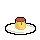
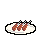
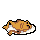
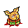
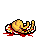
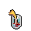
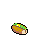

| 名前 | 満腹度回復 | HP回復 | 買/売 | 説明 | 特殊効果 | 生成時の状態 | 版 | |
|---|---|---|---|---|---|---|---|---|
| ザリガニ | 5 | 10 | 100/50 | ザリガニだ | 0.16 以降: クリーム・スターターとイエロー・テンパランスの共鳴のとき、食べるとレベルが1上がる（Lv99なら変化なし） HPが満タンの状態で食べると、最大HPが1上がる 0.16: クリーム・スターターとイエロー・テンパランスの共鳴で、HP回復量が2倍になる | 0.13 | ||
| カエルの死体 | 5 | 20 | 100/50 | カエルの死体だ | HPが満タンの状態で食べると、最大HPが1上がる 0.16: クリーム・スターターとイエロー・テンパランスの共鳴で、HP回復量が2倍になる エコーズACT2の罠（ドジュウ）で持ち物ごと焦げて「カエルの丸焼き」になる | 0.13 | ||
| カエル | 5 | 50 | 200/100 | 小さなカエルだ | HPが満タンの状態で食べると、最大HPが1上がる 0.16: クリーム・スターターとイエロー・テンパランスの共鳴で、HP回復量が2倍になる エコーズACT2の罠（ドジュウ）で持ち物ごと焦げて「カエルの丸焼き」になる | 0.13 | ||
| 鎌倉カスター | 7 | 0 | 200/100 | 食べかけだ。 | 満腹度が最大の状態で食べると、最大満腹度が1上がる エコーズACT2の罠（ドジュウ）で持ち物ごと焦げて「焦げた食べ物」になる | 0.13 | ||
| 焦げたピッツァ | 10 | 0 | 50/25 | 焼きすぎて焦げたピッツァだ | 満腹度が最大の状態で食べると、最大満腹度が1上がる エコーズACT2の罠（ドジュウ）で持ち物ごと焦げて「消し炭」になる | 0.13 | ||
| モッツァレラチーズとトマトのサラダ | 10 | 0 | 600/300 | 満腹度が10回復するぞ | 食べると精神力が最大まで回復する（すでに最大なら何も起きない） 満腹度が最大の状態で食べると、最大満腹度が1上がる エコーズACT2の罠（ドジュウ）で持ち物ごと焦げて「焦げた料理」になる | 0.13 | ||
| キリマンジャロの雪解け水 | 10 | 0 | 600/300 | 満腹度が10回復するぞ | 食べる（飲む）と盲目・ンドゥールの状態が治る その階の間、罠と透明な敵が見える（睡眠にもならない。射撃枠のフー・ファイターズの弾のダメージが1.5倍） 装備中の特殊呪縛のDISC（攻撃・防御・能力のどの枠でも）の呪縛が解ける 射撃枠にフー・ファイターズを装備していると、弾数が5増える（上限99） エコーズACT2の罠（ドジュウ）で持ち物ごと焦げて「焦げた料理」になる | 0.13 | ||
 | プリン | 10 | 0 | 600/300 | 満腹度が10回復するぞ | 食べると鈍足・混乱が治る 腹ペコ状態のときに食べると、その階では満腹度が減らなくなる（億泰の台詞が出る） 満腹度が最大の状態で食べると、最大満腹度が1上がる エコーズACT2の罠（ドジュウ）で持ち物ごと焦げて「焦げた料理」になる | 0.13 | |
| 焦げた料理 | 10 | 0 | 100/50 | 満腹度が10回復するぞ | 満腹度が最大の状態で食べると、最大満腹度が1上がる エコーズACT2の罠（ドジュウ）で持ち物ごと焦げて「消し炭」になる | 0.13 | ||
| ハーブティー | 10 | 0 | 300/150 | カモミールが入ってるぞ | 0.15 以降: 食べたあと、射撃枠がタスクなら弾数が5、フー・ファイターズなら3増える（上限99） 満腹度が最大の状態で食べると、最大満腹度が1上がる | 0.15 | ||
| 焦げた食べ物 | 10 | 0 | 50/25 | 焦げた食べ物だ。 | 満腹度が最大の状態で食べると、最大満腹度が1上がる エコーズACT2の罠（ドジュウ）で持ち物ごと焦げて「消し炭」になる | 0.13 | ||
| 消し炭 | 10 | 0 | 10/5 | 真っ黒に焦げた何かだ。 | 食べると最大満腹度が10下がる（満腹度は10回復する） これ以上焦げない（焦げ先なし） | 0.13 | ||
| ヤドクガエル | 10 | 0 | 100/50 | ヤドクガエルだ | 食べると80のダメージを受ける（防げない。HPが0以下なら力尽きる） 投げると敵に80のダメージを与える エコーズACT2の罠（ドジュウ）で持ち物ごと焦げて「カエルの丸焼き」になる | 0.13 | ||
| 大きいカエル | 10 | 100 | 500/250 | 大きなカエルだ | HPが満タンの状態で食べると、最大HPが2上がる 0.16: クリーム・スターターとイエロー・テンパランスの共鳴で、HP回復量が2倍になる エコーズACT2の罠（ドジュウ）で持ち物ごと焦げて「カエルの丸焼き」になる | 0.13 | ||
| くさったピッツァ | 20 | 0 | 50/25 | 変な臭いがする | 食べると悪い結果が1つ起きる（等確率）: ・HPが1になる ・精神力が3下がる ・最大精神力が1下がる ・最大HPが5下がる ・レベルが3下がる （最大HP・レベルは下限1。起こせない結果は別の結果に置き換わる） ザ・ハンドとパール・ジャムの共鳴、またはクレイジー・Dとパール・ジャムの共鳴のときは悪い結果が起きない（おいしく食べられる） エコーズACT2の罠（ドジュウ）で持ち物ごと焦げて「焦げたピッツァ」になる | 0.13 | ||
| 娼婦風スパゲッティ | 20 | 0 | 600/300 | 満腹度が20回復するぞ | 食べると虫歯が飛び出し、前方の最初に当たった敵に40のダメージを与える 満腹度が最大の状態で食べると、最大満腹度が1上がる エコーズACT2の罠（ドジュウ）で持ち物ごと焦げて「焦げた料理」になる | 0.13 | ||
 | 子羊背肉のリンゴソースかけ | 20 | 0 | 600/300 | 満腹度が20回復するぞ | 食べると最大満腹度が必ず10上がる（満腹でなくても） エコーズACT2の罠（ドジュウ）で持ち物ごと焦げて「焦げた料理」になる | 0.13 | |
 | カエルの丸焼き | 20 | 0 | 100/50 | 「テイエンチー」と呼ばれる料理だ。 | 満腹度が最大の状態で食べると、最大満腹度が1上がる エコーズACT2の罠（ドジュウ）で持ち物ごと焦げて「焦げた料理」になる | 0.13 | |
 | 猫バーガー | 20 | 0 | 400/200 | 猫バーガーだ | 食べると悪い結果が1つ起きる（等確率）: ・HPが1になる ・精神力が3下がる ・最大精神力が1下がる ・最大HPが5下がる ・レベルが3下がる （最大HP・レベルは下限1。起こせない結果は別の結果に置き換わる） ザ・ハンドとパール・ジャムの共鳴、またはクレイジー・Dとパール・ジャムの共鳴のときは悪い結果が起きない（おいしく食べられる） エコーズACT2の罠（ドジュウ）で持ち物ごと焦げて「焦げた食べ物」になる | 0.13 | |
 | 猫ステーキ | 20 | 0 | 400/200 | 猫ステーキだ | 食べると悪い結果が1つ起きる（等確率）: ・HPが1になる ・精神力が3下がる ・最大精神力が1下がる ・最大HPが5下がる ・レベルが3下がる （最大HP・レベルは下限1。起こせない結果は別の結果に置き換わる） ザ・ハンドとパール・ジャムの共鳴、またはクレイジー・Dとパール・ジャムの共鳴のときは悪い結果が起きない（おいしく食べられる） エコーズACT2の罠（ドジュウ）で持ち物ごと焦げて「焦げた食べ物」になる | 0.13 | |
 | 猫ジュース | 20 | 0 | 400/200 | 猫ジュースだ | 食べると悪い結果が1つ起きる（等確率）: ・HPが1になる ・精神力が3下がる ・最大精神力が1下がる ・最大HPが5下がる ・レベルが3下がる （最大HP・レベルは下限1。起こせない結果は別の結果に置き換わる） ザ・ハンドとパール・ジャムの共鳴、またはクレイジー・Dとパール・ジャムの共鳴のときは悪い結果が起きない（おいしく食べられる） エコーズACT2の罠（ドジュウ）で持ち物ごと焦げて「焦げた食べ物」になる | 0.13 | |
| オレンジ | 20 | 0 | 400/200 | 美味しそうなオレンジだ | 満腹度が最大の状態で食べると、最大満腹度が1上がる エコーズACT2の罠（ドジュウ）で持ち物ごと焦げて「焦げた食べ物」になる | 必ず爆弾になっている（床置き・店・変化のとき） 必ず爆弾になって出る。食べると爆発する | 0.13 | |
| 超巨大なカエル | 20 | 999 | 1000/500 | 超巨大なカエルだ | HPが最大値まで全回復する（回復量は上限まで） HPが満タンの状態で食べると、最大HPが5上がる 0.16: クリーム・スターターとイエロー・テンパランスの共鳴で、HP回復量が2倍になる エコーズACT2の罠（ドジュウ）で持ち物ごと焦げて「カエルの丸焼き」になる | 0.13 | ||
| 魚のフライ | 40 | 0 | 300/150 | 刑務所らしいしみったれたメニューだぞ | 0.15 以降: 食べると50の固定ダメージを受ける（HPが0以下なら力尽きる。死因「死刑執行されて」） 満腹度が最大の状態で食べると、最大満腹度が1上がる | 0.15 | ||
| ローストビーフサンドイッチ | 40 | 0 | 300/150 | スゴイぞ！オニオンと卵も入っている | 0.16: クリーム・スターター装備の敵がドロップするものでのみ手に入る（床には出ない） 満腹度が最大の状態で食べると、最大満腹度が2上がる | 0.16 | ||
| ピッツァ | 50 | 0 | 100/50 | ブチャラティが食べてたクォーターサイズのピッツァだ | 満腹度が最大の状態で食べると、最大満腹度が2上がる エコーズACT2の罠（ドジュウ）で持ち物ごと焦げて「焦げたピッツァ」になる | 0.13 | ||
| ネアポリスのピッツァ | 100 | 0 | 400/200 | ネアポリスの美味しいピッツァだ | 満腹度が最大の状態で食べると、最大満腹度が4上がる エコーズACT2の罠（ドジュウ）で持ち物ごと焦げて「焦げたピッツァ」になる | 0.13 | ||
| ポルポのピッツァ | 999 | 0 | 800/400 | 壁のような巨大なピッツァだ | 食べると最大満腹度が必ず10上がる（満腹度は全回復） 食べると鈍足になる（倍速のときは倍速が解けるだけ）。メイド・イン・ヘブンを装備していると鈍足にならない エコーズACT2の罠（ドジュウ）で持ち物ごと焦げて「焦げたピッツァ」になる | 0.13 | ||
 | サンドイッチ | 999 | 0 | 300/150 | 平穏な気持ちになって精神力が１上がるぞ | 満腹度が全回復し、精神力（最大精神力）が1上がる 満腹度が最大の状態で食べると、最大満腹度が1上がる エコーズACT2の罠（ドジュウ）で持ち物ごと焦げて「焦げた料理」になる | 0.13 |